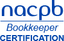

Papyrus Financial LLC

OUR TECHNIQUE
Papyrus Financial uses a system of bookkeeping that enables the business owner to project cost, track overhead, and acquire the financial position your company. We individualize your books to your needs. Utilizing Papyrus Financial your business will have an optimal bookkeeping system that reflects the true value of your business. We perform an in-depth analysis of your business isolating problems in day-to-day operations, so we can begin working towards and maintaining a solution together.